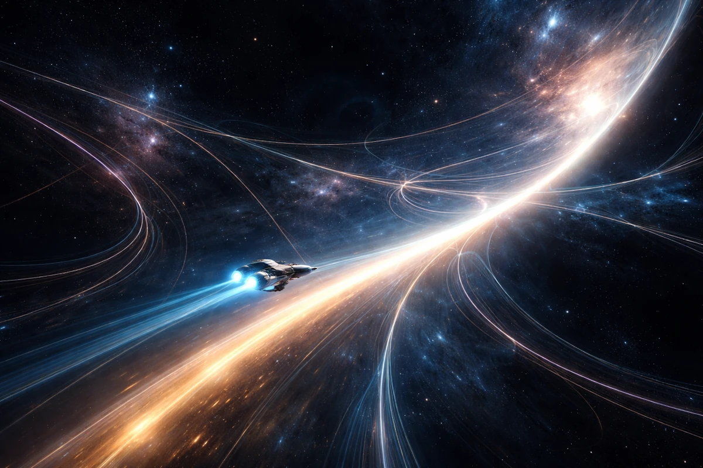
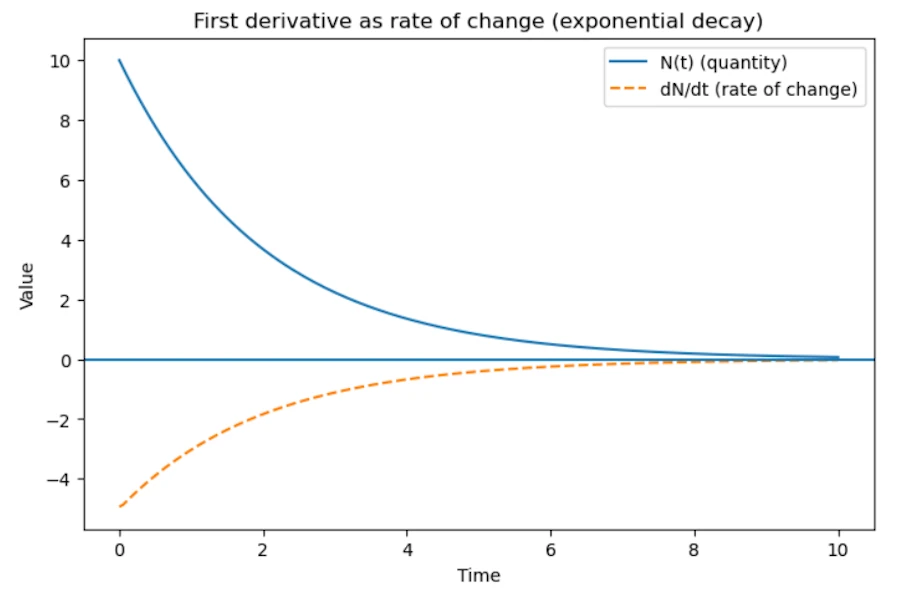

<!-- local testing : reveal-md .\_slides_equa_diff_in_physics.md --watch --> <!-- generates slides: reveal-md .\_slides_equa_diff_in_physics.md --static docs + REMOVE UNDESCORE --> <style> .reveal { font-size: 28px; } .reveal h1 { font-size: 1.6em; line-height: 1.2; text-align: left; } .reveal h2 { font-size: 1.1em; text-align: left; } .reveal h3 { font-size: 0.9em; text-align: left; } .reveal p, .reveal li { font-size: 0.9em; text-align: left; } .reveal ul, .reveal ol { display: block; } .reveal blockquote { font-size: 0.85em; } .reveal table { font-size: 0.8em; } .reveal pre, .reveal code { font-size: 0.75em; } .reveal .slides section { padding-top: 20px; } /* Images */ .reveal section img { max-width: 85%; max-height: 45vh; object-fit: contain; border-radius: 8px; } .reveal section img.img-full { max-height: 65vh; display: block; margin: 0 auto; } /* Bumper slides */ .reveal section.bumper { display: flex !important; flex-direction: column; justify-content: center; align-items: center; height: 100%; text-align: center; } .reveal section.bumper h1, .reveal section.bumper h2 { text-align: center; width: 100%; } </style> <!-- .slide: class="bumper" --> # From Derivatives to Action ## How Physics Describes Changes <!-- > Building intuition from local laws, differential equations, > and variational principles --> <div align="center"> <small>40tude · 2026</small> </div> <p></p> --- <!-- .slide: class="bumper" --> # Why Derivatives and Differential Equations? --- # Most physical phenomena involve change * Position changes with time * Temperature changes in space * Velocity changes due to forces * Electric fields vary in space and time If $x(t)$ expresses where we are in function of time * Velocity: $v = \frac{dx}{dt}$ * Acceleration: $a = \frac{d^2x}{dt^2}$ When describing changes (in space in time...) **derivatives** appear naturally. --- # Why equations are first or second order? Because these equations describe - how a system's state evolves - based on its current configuration --- # Why first-order equations? * Where the rate of change depends on the current value. * Radioactive decay * Heat transfer (Newton’s Law of Cooling) * Percentages ($\frac{dS}{dt} = r \cdot S$) * The universe is interested in how the "now" dictates the "next moment". --- # Example: radioactive decay * We **measure** that the speed at which nuclei disappear is proportional to how many remain. * Translation: $\frac{dN}{dt} = -\lambda N$ <!-- * More atoms means more decay events per second. --> * Solution (exponential decay): $N(t) = N_0 e^{-\lambda t}$ <p></p> --- # Why second-order equations? * Because of Newton’s Second Law: $F = ma$ * Which explains that the Force changes the rate of change of the position * Any law involving force (from gravity to electromagnetism) is naturally second-order * In wave equations, the second derivative describes how a disturbance "snaps back" toward equilibrium, allowing energy to propagate through space. --- # The Physics of "Memory" * A force doesn't change a position directly, it changes the *rate of change* of the position * $F = m \frac{dv}{dt} = m \frac{d^2x}{dt^2}$ * To predict the future state at $t + \Delta t$, we need to know 1. Where the object is ($x$) 2. How it got there (Velocity: $\dot{x}$). The "memory" of its previous motion, which dictates its momentum. * If the universe were governed by first-order equations ($F = mv$), inertia wouldn't exist --- <!-- .slide: class="bumper" --> # Why the same equations everywhere? --- # Three phenomena, one structure Different fields, same pattern. <!-- Time change = spatial curvature: --> * Temperature: $T(x,t)$ * String displacement: $y(x,t)$ * Quantum wavefunction: $\psi(x,t)$ | System | Equation | Behavior | | ------- | -------------------------------------------- | ------------ | | Heat | $\partial_t T = \kappa \nabla^2 T$ | Diffusion | | Waves | $\partial_t^2 u = c^2 \nabla^2 u$ | Oscillations | | Quantum | $i\partial_t \psi = -\nabla^2 \psi + V\psi$ | Prob. waves | Same math ingredient, different physics. --- # The Laplacian $\nabla^2$ ## Measuring local difference The second spatial derivative measures **curvature**: how different a point is from its neighbors. * $\nabla^2 u > 0$ : point is colder/lower than neighbors: heat/force flows in * $\nabla^2 u < 0$ : point is hotter/higher than neighbors: heat/force flows out In 1D: $\nabla^2 u = \frac{d^2u}{dx^2}$ In 3D: $\nabla^2 u = \frac{\partial^2 u}{\partial x^2} + \frac{\partial^2 u}{\partial y^2} + \frac{\partial^2 u}{\partial z^2}$ --- # Why? ## Locality + Symmetry + Conservation Physics equations are the simplest ones compatible with: 1. **Locality**: what happens here depends on neighbors, not the whole universe 2. **Symmetry**: laws must be invariant under translations and rotations 3. **Conservation laws**: energy, momentum, charge The simplest differential operator satisfying all three constraints is the **Laplacian** $\nabla^2$. Which explains why the same equations appear in heat, waves, quantum mechanics, and electromagnetism. --- <!-- .slide: class="bumper" --> # From local to global: variational principles --- # Two languages for the same physics **Local (differential equations):** > If the system is like *this* right now, it will start changing like *that*. Step-by-step evolution from one instant to the next. **Global (variational principle):** > Among all possible paths connecting A to B, which one does nature choose? The entire trajectory is considered at once. Both languages are **equivalent**, they encode the same physics. --- # What is a variational principle? Any statement of the form: > *The physical solution is the one that makes a certain quantity stationary.* $$\delta \mathcal{F} = 0$$ Historical first. Fermat's principle (~1660): > *Light follows the path of stationary travel time.* This explains both reflection and refraction from a single principle. From optics to mechanics: Maupertuis, Euler, Lagrange, Hamilton all searched for the same idea. --- <!-- .slide: class="bumper" --> # The principle of stationary action --- # Action: a "score" for each trajectory For any possible path, we compute a single number, the **action**: $$S = \int_{t_1}^{t_2} L(x, \dot{x}, t)\, dt$$ * $L = T - V$ is the **Lagrangian** (kinetic minus potential energy) * $T = \frac{1}{2}m\dot{x}^2$ and $V(x)$ = potential energy The principle: > *The real trajectory is the one that makes $S$ stationary: $\delta S = 0$* Not arbitrary. $L = T - V$ is the **unique** combination that reproduces Newton's laws. --- # From $\delta S = 0$ to $F = ma$ Starting from $L = \frac{1}{2}m\dot{x}^2 - V(x)$ and requiring $\delta S = 0$: 1. Vary the path: $x(t) \to x(t) + \varepsilon\eta(t)$, with $\eta(t_1) = \eta(t_2) = 0$ 2. Expand to first order, integrate by parts (boundary terms vanish) 3. Require $\delta S = 0$ for **any** variation $\eta$ This gives the **Euler-Lagrange equation**: $$\frac{d}{dt}\frac{\partial L}{\partial \dot{x}} - \frac{\partial L}{\partial x} = 0$$ Substituting $L$: $\quad m\ddot{x} = -\frac{dV}{dx} = F$ --- # Noether's theorem (1915) > *Every symmetry of the action gives a conservation law.* | Symmetry | Conservation law | | -------- | ---------------- | | Time invariance | Energy | | Space invariance | Momentum | | Rotation invariance | Angular momentum | Newton's laws do not *explain* why energy is conserved. The action framework does. --- # One principle, all of fundamental physics Starting from $\delta S = 0$ with the right Lagrangian: * **Newton's laws**: classical mechanics * **Maxwell's equations**: electromagnetism * **Schrodinger equation**: quantum mechanics * **Einstein's field equations**: general relativity Light itself is a consequence: combining Maxwell's equations from the EM action gives a wave equation with speed $c = \frac{1}{\sqrt{\mu_0\varepsilon_0}}$. --- <!-- .slide: class="bumper" --> # The quantum connection --- # Feynman path integral ## All paths contribute Classical: one path, the one where $\delta S = 0$. Quantum (Feynman, ~1948): a particle "explores" **all** possible paths. Each path contributes an amplitude: $$e^{iS/\hbar}$$ * $S$ = action for that path * $\hbar$ = reduced Planck constant (very small) The total amplitude is the **sum over all paths**. --- # Why the classical path survives? When $\hbar \to 0$ (macroscopic scale): * Near the stationary-action path, phases vary slowly, **constructive interference** * Away from it, phases oscillate rapidly, **destructive interference**, cancels out The classical trajectory ($\delta S = 0$) is the one where neighboring paths interfere constructively. Classical mechanics **emerges** from quantum mechanics as a limit. --- <!-- .slide: class="bumper" --> # Take away --- # Take away * Physics uses derivatives because nature evolves **continuously**: derivatives are the language of change * Most laws are **2nd order** because systems have inertia. They remember their velocity * The same equations (heat, waves, quantum) arise from **locality + symmetry + conservation** * The Laplacian $\nabla^2$ is the universal operator: it measures how a point differs from its neighbors * Differential equations (local) and variational principles (global) are **two equivalent languages** * The action $S = \int (T-V)\,dt$ encodes all of classical physics in a single principle: $\delta S = 0$ * **Noether's theorem**: every symmetry of the action generates a conservation law * Quantum mechanics sums all paths weighted by $e^{iS/\hbar}$ and the classical path emerges by constructive interference